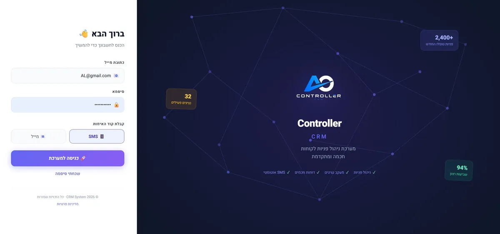

לקוח מתקשר ושואל איפה החוזה שחתמתם לפני חצי שנה. נציג רשם פנייה של לקוח עסקי, צירף אסמכתא, ומאז אף אחד לא נגע בה. בשני המקרים המסמך קיים, איפשהו. הבעיה היא שהוא מנותק מהלקוח, מהפנייה וממי שאמור לטפל בה. זה מה שמערכת ניהול מסמכים לעסק צריכה לפתור, ולכן לפני שבוחרים מערכת כדאי להבין קודם מה בדיוק הבעיה אצלכם.
מה זו מערכת ניהול מסמכים דיגיטליים
מערכת ניהול מסמכים דיגיטליים מרכזת את המסמכים של העסק, חוזים, הצעות מחיר, סריקות, אסמכתאות וקבצי לקוחות, במקום אחד מקוון, עם הרשאות ועם הקשר: לאיזה לקוח או לאיזו פנייה כל מסמך שייך. ההבדל בין "סרקנו הכל לענן" לבין מערכת הוא בדיוק ההקשר הזה. תיקייה בענן שומרת קבצים. מערכת יודעת של מי הקובץ, מי רשאי לראות אותו, ומה עוד צריך לקרות איתו.
ברוב העסקים הקטנים והבינוניים המסמכים מפוזרים בין Drive, מייל, וואטסאפ של בעל העסק ומגירה במשרד. העברה של הבלגן הזה מהנייר למסך לא פותרת אותו. מה שפותר הוא לחבר כל מסמך למקום שבו עובדים איתו.
שלושה סוגים של מערכות ניהול מסמכים
"מערכות ניהול מסמכים" הוא שם לשלושה צרכים שונים, וחלק גדול מהבחירה הוא לזהות לאיזה מהם אתם שייכים:
- ארכיון מסמכים ייעודי. מערכת שהמסמך הוא מרכז העבודה בה: גרסאות, חתימה דיגיטלית, חיפוש בתוך תוכן הקבצים ומדיניות שמירה. מתאים בעיקר למשרדים שהארכיון הוא לב העבודה שלהם.
- מסמכים בתוך ניהול הלקוחות (CRM). כל קובץ מצורף לפנייה של הלקוח, ליד התיעוד, הסטטוס והתזכורות. מתאים לעסק שהשאלה הנפוצה אצלו היא "איפה המסמך של הלקוח הזה".
- מסמכים בתוך תהליך עבודה עם זמני טיפול. כל פנייה נרשמת בטופס עם אסמכתא, ויש מי שעוקב שהיא מטופלת בזמן. מתאים למוקדים ולצוותים שהבעיה אצלם היא לא איפה המסמך, אלא שאף אחד לא טיפל בו.
ב-A.L Systems אנחנו בונים את שני הסוגים האחרונים. אם מה שאתם צריכים הוא ארכיון כבד עם ניהול גרסאות, חתימות וחיפוש בתוך תוכן הקבצים, עדיף לבחון מערכת ארכיון ייעודית. אלה לא יכולות שיש במערכות שלנו.
מה מערכת לניהול מסמכים עסקיים צריכה לדעת לעשות
חשבוניות, חוזים, הצעות מחיר, אישורים ומסמכי ספקים הם המסמכים העסקיים שרוב העסקים מחפשים להם סדר. בלי קשר לסוג המערכת, אלה היכולות שכדאי לבדוק:
- קליטה: איך מסמך נכנס למערכת. העלאה ידנית, סריקה מהטלפון, או קליטה אוטומטית ממייל ומוואטסאפ. ככל שהקליטה קלה יותר, פחות מסמכים נשארים בחוץ.
- זיהוי טקסט (OCR): במערכות ארכיון מתקדמות המערכת קוראת את הטקסט מתוך סריקה, ולפעמים גם מחלצת ממנה נתונים כמו ספק, תאריך וסכום. בלי זה, סריקה היא רק תמונה.
- תיוג וחיפוש: למצוא מסמך לפי לקוח, סוג מסמך, תקופה או מילה שמופיעה בו, ולא לפי שם קובץ שמישהו בחר.
- גרסאות ותיעוד שינויים: לדעת מה הגרסה העדכנית של חוזה, ומי שינה מה ומתי.
- גיבוי ושמירה: איפה המסמכים מאוחסנים, האם יש גיבוי, וכמה זמן הם נשמרים. את משך השמירה הנדרש לכל סוג מסמך כדאי לבדוק מול רואה החשבון, כי הוא משתנה לפי סוג המסמך והעסק.
- שיתוף עם רואה החשבון: גישה מוגבלת רק למסמכים הכספיים, בלי לפתוח לו את כל התיקייה.
דרישות: מה לבדוק לפני שבוחרים מערכת ניהול מסמכים
זו רשימת הדרישות שכדאי לעבור עליה לפני שיחה עם ספק, לא משנה איזה:
- למה המסמך שייך? ללקוח, לפנייה, לפרויקט או לארכיון כללי. זו השאלה שקובעת איזה סוג מערכת מתאים.
- מי צריך לראות מה? הרשאות לפי תפקיד, ולא תיקייה שכל מי שיש לו קישור רואה בה הכל.
- מה קורה כשעובד עוזב? המסמכים צריכים להישאר אצל העסק, והגישה של העובד צריכה להיחסם בלחיצה.
- אילו קבצים ובאיזה גודל? PDF וסריקות, אבל גם תמונות, הקלטות וסרטונים, אם זה מה שמגיע אליכם.
- האם מישהו צריך לטפל במסמך עד מועד מסוים? אם כן, צריך מעקב והתראה, לא רק אחסון.
- איך נכנסים? כשיש מידע רגיש, כדאי לבדוק אימות דו-שלבי לעובדים.
- איך מעבירים את מה שכבר קיים? ייבוא של רשימות מאקסל, והעברה הדרגתית של מסמכים בלי לעצור את השוטף.
איך עוברים למערכת ניהול מסמכים בלי לעצור את העבודה
- מיפוי: רשימה של סוגי המסמכים שיש בעסק, מאיפה כל אחד מגיע ומי צריך אותו.
- מבנה: להחליט לפי מה מסדרים: לקוח, פנייה, פרויקט או תקופה. המבנה הזה חשוב יותר מבחירת התוכנה.
- מעבר הדרגתי: מתחילים לשמור במערכת רק מסמכים חדשים, ומעבירים את הישנים לפי הצורך, ולא הכול בבת אחת.
- הרשאות: מגדירים מי רואה מה לפני שכל הצוות נכנס, ולא אחרי.
מסמכים שמחוברים ללקוח: ניהול מסמכים בתוך ה-CRM
כשהשאלה הנפוצה בעסק היא "איפה החוזה" או "איזו הצעת מחיר שלחנו", התשובה היא לא עוד תוכנה לקבצים, אלא לשמור את הקובץ באותו מקום שבו נמצא כל השאר על הלקוח. כך עובד ה-CRM של A.L Systems:

- קבצים מצורפים ישירות לפנייה. כל קובץ נשמר בתוך הפנייה של הלקוח, ליד התיעוד והסטטוס שלה. כשהלקוח מתקשר שוב, ההיסטוריה שלו נשלפת לפי מספר הטלפון, כולל הפניות הקודמות והקבצים שצורפו אליהן.
- כל סוגי הקבצים הנפוצים. PDF, Word, Excel, תמונות וסריקות, הקלטות וסרטונים, עד 35MB לקובץ.
- הרשאות לפי תפקיד. מנהל, נציג בכיר, נציג וצופה. צופה רואה בלבד, ורק מי שמורשה יכול לערוך פנייה ולצרף אליה קבצים.
- תזכורות על הפנייה. חסר מסמך? צריך לחזור ללקוח אחרי שיחתום? קובעים תזכורת על הפנייה, והמשימה לא נופלת בין הכיסאות.
דוגמה: חברת שיפוצים מנהלת במקביל כ-40 פרויקטים. לכל אחד הצעת מחיר חתומה, חוזה, תוכנית עבודה ותמונות "לפני". במקום שכל קובץ יתפזר בין מייל, וואטסאפ והנייד של מנהל הפרויקטים, הכל מצורף לפנייה של אותו לקוח. כשהלקוח מתקשר אחרי חודשיים ושואל מה סוכם, הנציג פותח את הפנייה ורואה את החוזה, ההצעה והתיעוד באותו מסך.
הדגמה חיה
רוצים לראות את ה-CRM בפעולה?
בהדגמה תפתחו פנייה של לקוח, תראו את ההיסטוריה שלו לפי הטלפון, תתעדו, תקבעו תזכורת ותשלחו לו SMS, ואז תעברו לדשבורד המנהל. הכל מדומה, בלי הרשמה ובלי להתקין כלום.
מסמכים שמחוברים לפנייה ולזמן טיפול: FileManager
במוקד שירות, בסניפים או במחלקות, המסמך הוא בדרך כלל חלק מפנייה: בקשת ביטול, תקלה, החזר. הבעיה שם היא לא איפה האסמכתא, אלא שהפנייה נרשמה ואף אחד לא עקב אחריה. בשביל זה בנינו את FileManager, מערכת לניהול פניות לקוחות: כל פנייה נרשמת בטופס קבוע, לכל טופס יש זמן טיפול, והמערכת עוקבת בעצמה.

- טופס לכל סוג פנייה. כל לקוח עסקי, סניף או מחלקה מוגדר כארגון עם טפסים משלו. בכל טופס יש הנחיות לעובד, שדות חובה, רשימות בחירה וצירוף אסמכתא.
- זמן טיפול (SLA) לכל טופס. למשל "עד 2 ימי עסקים". השעון מתחיל לרוץ ברגע שהעובד שומר את הפנייה.
- חריגות שמסומנות לבד. פנייה שעברה את זמן הטיפול מסומנת באדום, ובמסך הראשי של המנהל מופיע מה ממתין לטיפול ואיפה יש חריגות.
- התראה בוואטסאפ ודוח שבועי. המנהלים מקבלים בוואטסאפ את רשימת הטפסים שיש בהם חריגות, ויש דוח שבועי מסכם שאפשר לשלוח במייל.
- כניסה מאובטחת. עובדים נכנסים עם קוד אישי ואימות דו-שלבי באפליקציית Authenticator, וכל מנהל רואה רק את הארגונים והטפסים שבאחריותו.
- דשבורד וייצוא לאקסל. תמונת מצב של מה שממתין ומה בחריגה, וייצוא הרשומות של כל טופס לאקסל.
הדגמה חיה
נסו בעצמכם: מהפנייה ועד החריגה
בהדגמה תיכנסו כנציג עם קוד ואימות דו-שלבי, תזינו פנייה, תעברו לכובע של המנהל ותטפלו בה, ואז תראו מה קורה לפנייה שלא טופלה בזמן: חריגה, התראה בוואטסאפ ודשבורד. הכל מדומה, בלי הרשמה ובלי להתקין כלום.
דוגמה: מוקד שמשרת כמה לקוחות עסקיים
מוקד שירות חיצוני מטפל בפניות של רשת חדרי כושר, של חברת ביטוח ושל חנות אונליין. לכל אחד מהם סוגי פניות אחרים וזמני טיפול אחרים שסוכמו בחוזה. במערכת כל לקוח עסקי מקבל ארגון עם טפסים משלו. הנציג בוחר ארגון, בוחר טופס, ממלא ומצרף אסמכתא. מנהל הצוות של חדרי הכושר רואה רק את הפניות של חדרי הכושר, ויודע בכל רגע כמה ממתינות וכמה בחריגה. כשלקוח עסקי שואל "כמה פניות טופלו בזמן החודש?", יש תשובה מדויקת וקובץ אקסל לשלוח.
זמן טיפול (SLA) עובד רק כשמישהו מקבל התראה
הרבה עסקים כותבים בחוזה "טיפול תוך 48 שעות", ואז אף אחד לא בודק. זמן טיפול שרשום רק כתאריך בטבלה הוא מספר על הנייר. הוא הופך לכלי ניהול כשהמערכת מסמנת פנייה שמתקרבת לחריגה ושולחת התראה למי שאחראי עליה, לפני שהלקוח מתקשר לשאול. לכן, כשבוחרים מערכת ניהול מסמכים לעסק שמטפל בפניות, כדאי לשאול שלוש שאלות: האם אפשר להגדיר זמן טיפול שונה לכל סוג פנייה, מי מקבל התראה כשפנייה חורגת ובאיזה ערוץ (וואטסאפ עדיף על מייל שאף אחד לא פותח), והאם יש דוח שמראה כמה פניות טופלו בזמן, לכל לקוח עסקי בנפרד.
עוד דבר שקל לפספס: פנייה אמיתית עוברת כמה ידיים. נציג פותח אותה, טכנאי מטפל, מנהל מאשר חריגה. אם כל העברה היא מייל עם קובץ מצורף, נוצרים עותקים של אותו מסמך בכמה מקומות, ואחרי חצי שנה אף אחד לא יודע מה הגרסה הנכונה. כשהמסמכים נשמרים בתוך הפנייה עצמה, יש גרסה אחת, ומי שמקבל את הפנייה מקבל איתה את כל מה שכבר נאסף.
למה Drive או אקסל משותף לא מספיקים
Drive ו-Dropbox שומרים קבצים, אבל לא יודעים מי הלקוח, באיזו פנייה מדובר ומה הסטטוס. כשהלקוחות מתרבים, גם מבנה תיקיות מסודר הופך למבוך. אקסל משותף לרישום פניות הוא נקודת התחלה טובה, אבל הוא לא מתריע ולא אוכף מבנה: כל אחד כותב אחרת, חסרים פרטים, ואין מי שמסמן פנייה שמחכה יותר מדי. ההבדל בין כלי אחסון למערכת ניהול מסמכים עסקית הוא שבמערכת המסמך חי ליד הלקוח, ליד הפנייה ולצד מי שצריך לטפל בה.